Four applications are deployed on App Service. Each one pulls its image from Azure Container Registry. Traffic Manager reports every endpoint Online, and the storefront is live on the UI hostname.
Document control
Product
PetStore — catalog, orders, and administration
Date
23 October 2026
Resource group
Petstore-Resource-Group
Subscription
Petstore subscription
App Service plan
ASP-PetstoreResourceGroup-9881 · Basic B3 · Central India
Registry
petstoreazurecontainerregistry.azurecr.io
Evidence
Running shop and Azure portal screenshots. Secret values are not printed.
Contents
01 What this project covers
02 How the pieces fit
03 Storefront
04 Customer orders
05 Administration
06 Azure Database for PostgreSQL
07 Azure Blob Storage
08 Azure Key Vault
09 Azure Container Registry
10 Azure App Service
11 Azure Traffic Manager
12 Azure App Configuration
13 Deployment slots
14 Pet Store monitoring
15 Application Insights
16 Azure Cosmos DB
17 PostgreSQL products, later query
18 App Service scale-out
19 Azure Function HTTP trigger
20 Microsoft Entra External ID
Deployed applications
Web app
Image pulled from the registry
State
product-service-web-app
product-service-image · port 8081
Running, endpoint Online
order-service-wep-app
order-service-image · port 8083
Running, endpoint Online
pet-service-web-app
pet-service-image · port 8082
Running, endpoint Online
petstoreui-web-app
petstore-ui-image · port 80
Running, shop live, endpoint Online
1. What this project covers
PetStore is a small shop in which every pet is a product for sale. A visitor can browse, filter, and open a pet without signing in. Buying, order history, and administration are signed-in flows. The browser talks to two APIs. A third service shares the same database and the same secret source.
Key Vault db-credentials-petstore. No database password, connection string, or account key in application YAML
Figure 11, Figure 12
Container images
Azure Container Registry petstoreazurecontainerregistry. GitHub Actions pushes four images on every push to main
Figure 13, Figure 14, Figure 15, Figure 16
Hosting
Four Linux web apps deployed on plan ASP-PetstoreResourceGroup-9881, Basic B3, Central India. Each app pulls its image from the container registry. The live shop is Figure 22
Figure 17 through Figure 23
Routing
Four Traffic Manager profiles, routing method Priority. Online means that deployed app answered the health probe
Figure 24 through Figure 28
product-service
Port 8081. Pets for sale, categories, and image upload. Reads the database username and password, plus the blob connection string and account key, from Key Vault.
order-service
Port 8083. Register, login, checkout, and orders. Issues the JWT. Makes sure the admin account exists. Reads the database username and password from Key Vault.
pet-service
Port 8082. Pet API on the same database. Reads the database username and password from the same vault. The shop UI sells through the product service.
The React application runs on port 3000. Swagger is available at http://localhost:8081/swagger-ui.html and http://localhost:8083/swagger-ui.html.
2. How the pieces fit
The browser keeps the cart in local storage. Login is issued by the order service. The product service trusts the same JWT. Shop and admin sessions are stored separately, so signing in as a customer does not sign the administrator out.
Caller
Calls
For
Storefront and admin UI
product-service :8081
Categories, pets, photos
Storefront and admin UI
order-service :8083
Register, login, checkout, orders
All three services
Key Vault db-credentials-petstore
Database username and password
product-service
Blob container pet-container
Upload, replace, and delete pet photos
All three services
PostgreSQL petstore-server-name
Database petstore
GitHub Actions on main
Container Registry petstoreazurecontainerregistry
Build and store the four application images
App Service
Those four images
Public HTTPS sites for the shop and the three APIs
Traffic Manager
The App Service hostnames
DNS answer for an endpoint whose health probe is passing
Application accounts
These are shop accounts stored in the database. They are not the Azure or database secrets.
Username
Password
Role
demo
demo123
USER
admin
admin123
ADMIN
On startup, Hibernate creates any missing tables (ddl-auto: update). The order service creates the admin account when that username is missing. It does not reset an existing admin password.
Sections 10 and 11 are the hosted form of this same layout. App Service runs the four images. Traffic Manager watches those hostnames and answers DNS with an endpoint that is Online.
3. Storefront
The public shop is the home page. There is no login wall. Category chips are built from the pets already loaded, so a guest can filter by All, Cat, Dog, or Parrot. Each card shows the photo, category, name, description, and price, with Details and Add to cart. A new pet cannot be saved without an image, which is why every card in the catalog has a photograph.
Add to cart asks a guest to sign in. For a signed-in shopper it opens the cart drawer on the same page. Checkout needs a shop login, then clears the cart and opens that customer’s orders.
Figure 1. Storefront at localhost:3000. Twenty pets, category filters, and a signed-in shopper named amir. The header shows Cart and My account. There is no admin button on the shop.Figure 2. Cart drawer after adding Dog7. Parrot 1 and Dog7 are listed with quantity controls. The total is $759.00 and Checkout stays on this page until the order is placed.
4. Customer orders
A signed-in customer opens My account and sees only their own orders. The page is a data grid with search, column controls, and paging. Columns are Order, Items, Total, Status, and Placed. Customers cannot delete an order from this page. Delete stays on the admin orders screen.
Figure 3. Account page for amir. Order #6 is two cats for $603.00. Order #2 is three pets for $1,199.00. Both are PLACED. Log out is in the account menu, not in the shop header.
5. Administration
Administration lives at /admin and uses its own session. The navigation is Categories, Pets, and Orders. The signed-in administrator in these screenshots is admin. View store returns to the public shop without clearing the admin session.
Categories
Categories are created here before they can be chosen on a pet. The screenshot shows Cat, Dog, and Parrot, which are the same chips on the storefront. Each row can be deleted. The grid has search, filters, density, and export.
Figure 4. Admin categories. Three categories are in use. The add form is on the same page.
Pets
The pet list is the catalog the shop sells. Columns are Photo, Name, Category, Description, Price, and Actions. Edit and Delete are on each row. A new pet requires a photo. Uploads go to pet-container. Replacing a photo deletes the previous blob. Deleting a pet deletes its blob as well.
Figure 5. Admin pets. Parrots and cats are listed with the photograph stored in Blob Storage, a category, a price, and Edit / Delete.
Orders
Administrators see every order, including the customer id. The same orders that appear on a customer’s account page appear here, with an extra Customer column and a Delete action. Delete is allowed only for the ADMIN role.
Figure 6. Admin orders. Orders #6 and #2 belong to customer 3. Order #1 belongs to customer 2. Each row can be deleted.
6. Azure Database for PostgreSQL
All three services use one database, petstore, on an Azure Database for PostgreSQL flexible server. The server is in the Petstore resource group and is Ready.
Not enabled. This tier is aimed at development and test.
Figure 7. Flexible server overview. Status is Ready. The JDBC URL in each service points at this endpoint and the petstore database.
pgAdmin is connected to that server as amirrahi29. The public schema holds the application tables: categories, order_items, orders, pets, products, roles, and users. The products query in the screenshot returns the same catalog the storefront shows, twenty rows, with category and description filled in.
Figure 8. Database petstore on server pet-postgres. SELECT * FROM public.products ORDER BY id returns the pets for sale.
The database username and password are not written in the service YAML files. Each service reads the Key Vault secrets named username and password when it starts, then uses them as spring.datasource.username and spring.datasource.password.
7. Azure Blob Storage
Pet photographs are files in the storage account petstore. The application container is pet-container. A second container, $logs, is the storage log container and is not used by the shop.
Figure 9. Containers on storage account petstore. pet-container is the container named in the product service. Its anonymous access level in the portal is Blob.
Each upload is stored under a generated file name. The database keeps the blob URL. When the API returns a pet, it adds a short-lived shared access signature so the page can show the image. The expiry configured for that link is 60 minutes. The storage connection string and account key come from the Key Vault secrets connection-string and account-key. The account name, blob endpoint, container name, and SAS lifetime stay in configuration because they are not secret values.
Figure 10.pet-container holding the pet images. Twenty blobs are listed, created when pets were saved from the admin form.
8. Azure Key Vault
One vault holds the values the services used to keep in YAML. It is db-credentials-petstore, in Petstore-Resource-Group, location India South Central, on the Petstore subscription.
Figure 11. The vault in the subscription. One vault is in use for this project.
Four secrets are enabled. None of the secret values are stored in the repository.
Secret
Used as
Services
username
Database username
product, order, pet
password
Database password
product, order, pet
connection-string
Blob Storage connection string
product
account-key
Blob Storage account key
product
Figure 12. Secrets on db-credentials-petstore. All four are Enabled. The portal confirms account-key was created.
How a service reads them
The vault URL is the only Key Vault setting in configuration: https://db-credentials-petstore.vault.azure.net/. At startup each service signs in with DefaultAzureCredential and copies the secret values into the Spring environment before the database connection is opened. On a developer machine that credential is an Azure CLI login for an account that has Get permission on secrets. No client secret is written into the YAML.
A service that starts without an Azure login stops with a clear error: it could not read the secrets from this vault. It does not fall back to a password in a file. Sign in with az login as a principal that can get secrets, then start the jars again.
9. Azure Container Registry
Each application already has a Dockerfile. A push to the main branch of amirrahi29/Petstore-Microservice-App-SpringBoot-React builds all four images and stores them in Azure Container Registry. The registry login server is petstoreazurecontainerregistry.azurecr.io.
OpenID Connect. The workflow does not store a registry password.
Figure 13. Registry overview. One registry is in the Petstore resource group, on the Basic plan, in India South Central.
The repository name is the service name with -image on the end. Each repository has two tags: latest, and the git commit that built it.
Application
Image
Port inside the image
product-service
product-service-image
8081
order-service
order-service-image
8083
pet-service
pet-service-image
8082
petstore-ui
petstore-ui-image
80
Figure 14. Repositories in the registry: order-service-image, pet-service-image, petstore-ui-image, and product-service-image.Figure 15.pet-service-image has two tags, latest and the commit 39c7d5d. The same pair is published for the other three images.Figure 16. Manifest for petstoreazurecontainerregistry.azurecr.io/pet-service-image:39c7d5d9d16c5881d0ec3490cc54a14afa1dce4e. The image is a Linux amd64 OCI index.
The four workflow files live in .github/workflows. A push to main starts all of them. While a build is running, GitHub shows a yellow status on the commit. It turns green when that image is in the registry. Section 10 is the next step: each web app pulls its image from this registry and runs it.
10. Azure App Service
The four applications are deployed. App Service runs them as Linux web apps in Petstore-Resource-Group, on one plan, ASP-PetstoreResourceGroup-9881, in Central India. The plan is Basic, size B3, with one instance. Nothing is copied up as a jar or a zip. The publishing model is Container, so each app pulls its image from petstoreazurecontainerregistry.azurecr.io, the registry in section 9.
Deployed, in this report, means three things that the screenshots show together. The app list says Running. Each overview says runtime status Healthy, with the container image coming from that registry. A browser opened on the public hostname renders the shop. Figure 22 is that last check for the UI: the catalog, with photos and prices, is the deployed petstore-ui-image, not a local dev server.
The order app keeps the name order-service-wep-app that was used when it was created. That spelling is the resource name and the start of its hostname. Each public URL is HTTPS on the default domain above.
Figure 17. The deployment list. All four web apps are Running in Central India, on plan ASP-PetstoreResourceGroup-9881, pricing tier Basic, subscription Petstore subscription. Running is the platform state after App Service has pulled the image and started the container.Figure 18.order-service-wep-app is deployed. Publishing model Container, operating system Linux, runtime status Healthy. The container image line is the order image App Service pulled from the registry. The default domain is the public hostname in the table.Figure 19.pet-service-web-app is deployed on the same plan and in the same region. Runtime status Healthy. Its container image is pulled from petstoreazurecontainerregistry, the same way as the order app.Figure 20.petstoreui-web-app is deployed. Runtime status Healthy, Linux, publishing model Container. This is the app whose hostname serves Figure 22 and Figure 23. App Service pulled petstore-ui-image from the registry to run it.
Deployment Center is where the pull is recorded. On product-service-web-app the main container is named product-service. Source is Azure Container Registry, image product-service-image, tag 5a99f3e102c5612cccff9ac7330e5eb319ffe8db, port 8081. Continuous deployment for that main container is turned on, so App Service pulls this image from the registry when the app runs. The order, pet, and UI apps are wired the same way: one main container, image from this registry, port 8083, 8082, or 80.
Figure 21. The ACR pull for the deployed product app. Source Azure Container Registry, image product-service-image, tag 5a99f3e102c5612cccff9ac7330e5eb319ffe8db, port 8081. Continuous deployment for the main container is on.
Figure 22 is the deployed shop, opened in a browser. The address bar is the App Service hostname, so this page is petstoreui-web-app after it pulled petstore-ui-image. The catalog matches section 3: no login wall, category chips, prices, photos, Details, and Add to cart, with 20 pets. Figure 23 is the same deployment at /admin/products. The signed-in administrator is admin, and the grid has photo, category, price, edit, and delete. Together these two figures show that the container App Service pulled is the application, and that it is serving traffic.
Figure 22. The deployed UI, live. https://petstoreui-web-app-e3cahqc4bad5dthh.centralindia-01.azurewebsites.net serves the catalog from the image App Service pulled from ACR. Twenty pets, filters for All, Cat, Dog, and Parrot.Figure 23. The same deployed app, path /admin/products, signed in as admin. Administration is running on App Service, on the image pulled from the registry.
The UI image is built with the product and order hostnames in the table, so the browser on this shop calls those App Service URLs. The three Java apps still read db-credentials-petstore before they open PostgreSQL. On App Service that read uses the app’s managed identity. A Healthy runtime status means the container finished that startup and is serving its port.
The App Service Health Check setting on these overview blades is Not Configured. That setting is separate from runtime status. Endpoint health for DNS routing is the Traffic Manager probe in the next section.
11. Azure Traffic Manager
Traffic Manager answers DNS for a profile name such as ui-traffic-manager.trafficmanager.net. The client then connects to the address it was given. The profile chooses an endpoint whose health probe is passing. These four profiles use Priority routing. Each profile holds one External endpoint, aimed at one of the deployed web apps in section 10.
Monitor status Online means that deployed app answered. The probe calls the App Service hostname over HTTPS, and Online is the result when the container App Service pulled from ACR is up. It is the same fact as Figure 22, read from the routing side: the UI endpoint is Online because petstoreui-web-app is deployed and serving. The product, order, and pet endpoints are Online for the same reason on their own apps.
Profile
DNS name
Endpoint
Web app
ui-traffic-manager
ui-traffic-manager.trafficmanager.net
ui-service
petstoreui-web-app
product-traffic-manager
product-traffic-manager.trafficmanager.net
product-service
product-service-web-app
petstore-traffic-manager
petstore-traffic-manager.trafficmanager.net
order-service
order-service-wep-app
pet-traffic-manager
pet-traffic-manager.trafficmanager.net
pet-service
pet-service-web-app
All four profiles sit in Petstore-Resource-Group, on the Petstore subscription, with status Enabled and routing method Priority. The endpoint type is External. Each one targets the default hostname of the deployed app, the hostname App Service published after the ACR pull. Each endpoint is Enabled, and Monitor status is Online. The probe is HTTPS on port 443, path /. A success response from that deployed app is what the portal marks Online. A failed probe stops that endpoint from being offered.
Figure 24. Four profiles in front of the four deployed apps. Status Enabled, routing method Priority, resource group Petstore-Resource-Group. Each profile’s endpoint is one App Service hostname.Figure 25.pet-traffic-manager. Endpoint pet-service is Enabled and Online. Online means the deployed pet-service-web-app, the container pulled from ACR, answered the health probe.Figure 26.petstore-traffic-manager. Endpoint order-service is Enabled and Online. The probe reached the deployed order-service-wep-app.Figure 27.product-traffic-manager. Endpoint product-service is Enabled and Online. The probe reached the deployed product-service-web-app, the app whose ACR image and tag are in Figure 21.Figure 28.ui-traffic-manager. Endpoint ui-service is Enabled and Online. Online here is the deployed storefront: the same petstoreui-web-app that serves Figure 22.
Priority with a single Online endpoint sends every DNS answer for that profile to that app. A second endpoint, at a worse priority, would be used only after this one stopped passing the probe. These profiles do not have a second endpoint, and every app is in Central India, so the screenshots show a healthy route rather than a failover between regions.
The shop in Figure 22 and Figure 23 is opened on the App Service hostname. From there the page calls the product and order hostnames in section 10. Traffic Manager’s record of this setup is the health of each endpoint, and DNS lookups of the trafficmanager.net names. The apps themselves answer on the default domains listed above. Those domains are what the probes check.
12. Azure App Configuration
The storefront hostnames are kept in Azure App Configuration, store petstore-appconfig, in the same resource group. Configuration explorer, filtered to label petstore-ui, shows three keys. The portal hides the values. The keys are the three API addresses the UI build reads.
Key
Label
Last modified
VITE_ORDER_API
petstore-ui
26/10/2026, 22:07:14
VITE_PET_API
petstore-ui
26/10/2026, 22:07:14
VITE_PRODUCT_API
petstore-ui
26/10/2026, 22:07:13
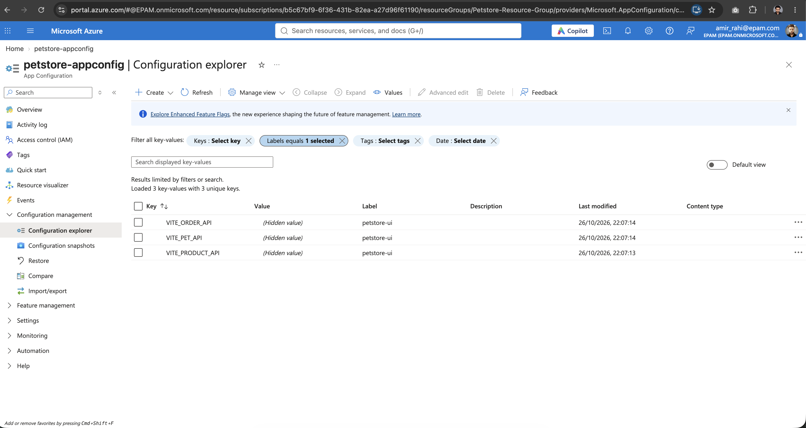
Figure 29.petstore-appconfig, Configuration explorer. Label equals petstore-ui. Three keys are loaded: VITE_ORDER_API, VITE_PET_API, and VITE_PRODUCT_API. Each value is hidden in the portal.
13. Deployment slots
petstoreui-web-app has a deployment slot beside production. The Deployment slots blade lists the production slot and petstoreui-web-app-staging. Both sit on plan ASP-PetstoreResourceGroup-9881. In this screenshot production is Stopped and holds 100 percent of the traffic. The staging slot is Running and holds 0 percent. Swap is available on the same blade. The app list on the left still shows the four web apps from section 10.
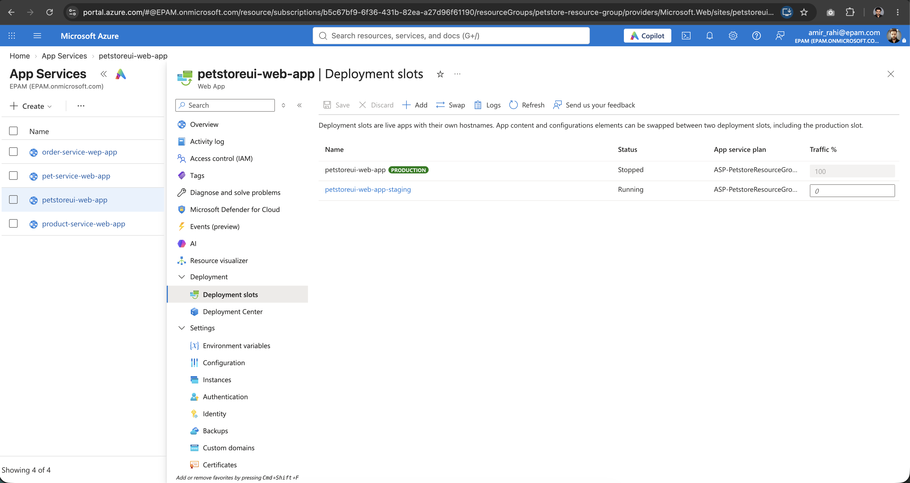
Figure 30. Deployment slots on petstoreui-web-app. Production is Stopped with traffic 100. petstoreui-web-app-staging is Running with traffic 0.
14. Pet Store monitoring
The deployed shop was opened on its App Service hostname with the browser network panel recording the page load. The document, the script, and the stylesheet return HTTP 200. The catalog call products?page=0&size=50 is still pending, and the page stays on Loading with empty cards.
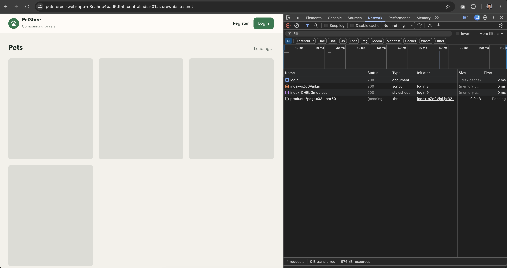
Figure 31.petstoreui-web-app-e3cahqc4bad5dthh.centralindia-01.azurewebsites.net. Login, the index script, and the stylesheet are 200. The products request is pending, so the Pets grid is still Loading.
15. Application Insights
Live metrics for petstore-app-insights show the product service as it runs on App Service. The blade is the last 60 seconds. Incoming charts are request rate, request duration, and request failure rate. Outgoing charts are dependency call rate, dependency duration, and dependency failure rate. Overall health shows committed memory, CPU total, and exception rate. Sample telemetry on the right is the log line behind a spike. Servers lists each process with requests, failed requests, dependencies, CPU, and committed memory.
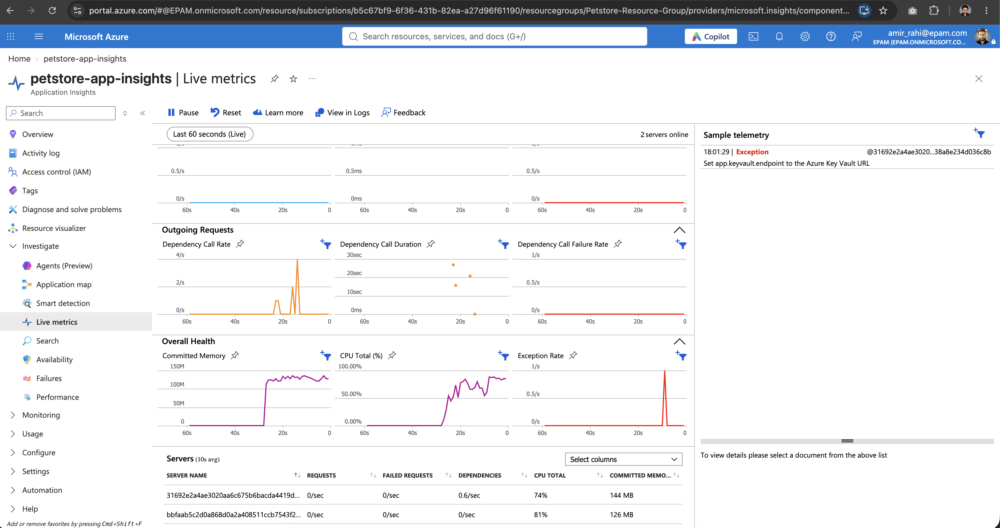
Figure 32. Live metrics, two servers online, at 18:01. Sample telemetry is the exception “Set app.keyvault.endpoint to the Azure Key Vault URL”. Request charts are at zero. Committed memory and CPU are plotted, and the servers table shows about 74 percent and 81 percent CPU with 144 MB and 126 MB committed.
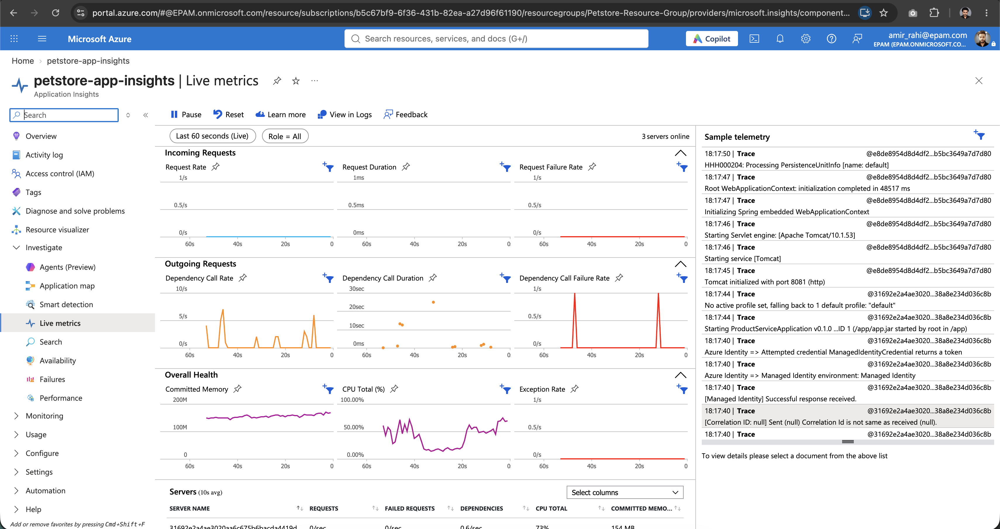
Figure 33. The same Live metrics blade, three servers online, at 18:17. Traces record Spring context initialization, Tomcat on port 8081, ProductServiceApplication started, and a managed-identity token. CPU and committed memory stay on the overall-health row. Dependency failure rate spikes once in the minute.
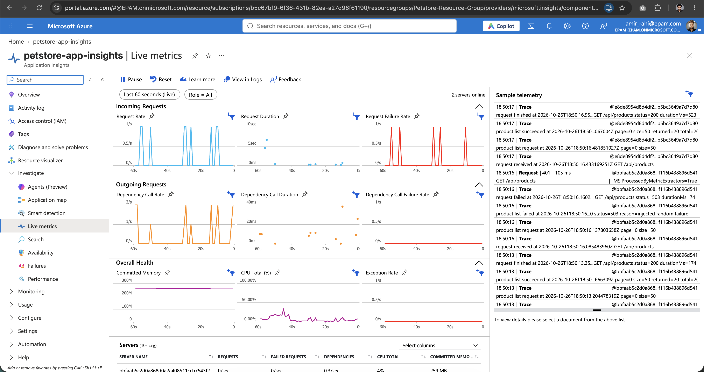
Figure 34. Live metrics at 18:50, two servers online. Traces for GET /api/products include status 200 and status 503 with the reason “injected random failure”. One request line is HTTP 401. Request failure rate spikes with those 503s. Committed memory holds near 250 MB and CPU stays low.
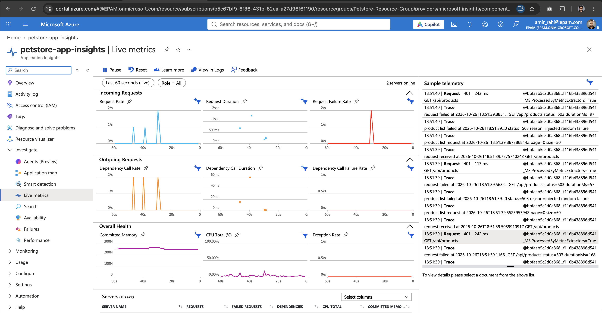
Figure 35. Live metrics at 18:51, two servers online. Request failure rate spikes at the right edge. Sample telemetry shows GET /api/products failing with status 503, “injected random failure”, and one request recorded as 401 in 243 ms. Committed memory and CPU remain on the overall-health charts.
16. Azure Cosmos DB
The shop cart and a copy of the catalog sit in Azure Cosmos DB for NoSQL, account petstore-cosmos, database petstore. PostgreSQL remains the store for products, categories, orders, and users. The order service writes the signed-in shopper’s cart to container cart. One document per user uses the user id as both id and userId, and the lines live in items. The product service copies each saved pet into container products. Data Explorer shows both containers under the same database.
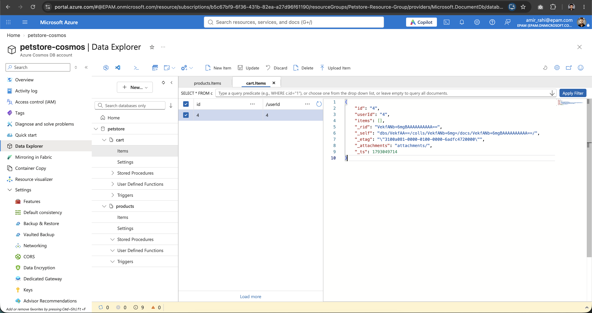
Figure 36. Data Explorer on petstore-cosmos. Database petstore, container cart, document id 4. userId is 4 and items is an empty array.
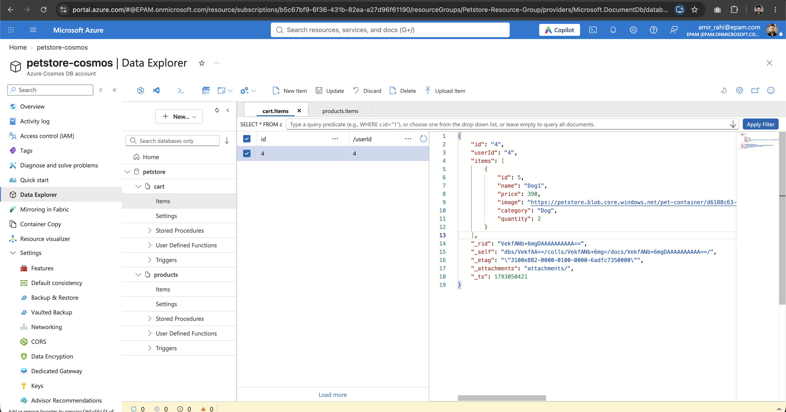
Figure 37. The same cart document after a shop add. items holds Dog1, price 390, category Dog, quantity 2, with the photo URL in Blob Storage. Container products is listed beside cart.
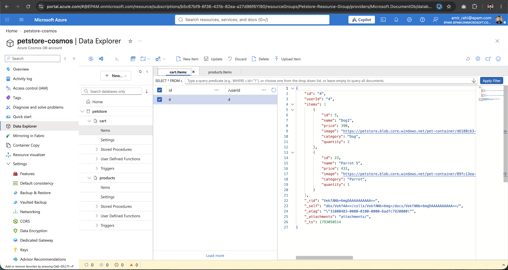
Figure 38. Cart document 4 with two lines: Dog1, quantity 2, and Parrot 5, price 433, quantity 1. The query is SELECT * FROM c on cart.
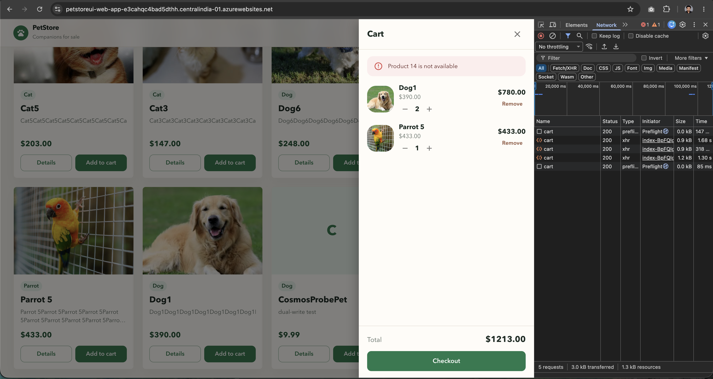
Figure 39. The deployed shop at petstoreui-web-app-e3cahqc4bad5dthh.centralindia-01.azurewebsites.net. The cart drawer lists Dog1 at quantity 2 and Parrot 5 at quantity 1. The total is $1,213.00. The network panel shows the cart calls returning 200. The catalog also includes CosmosProbePet, the pet written through the product copy.
17. PostgreSQL products, later query
Section 6 showed the flexible server and the petstore database. A later query in pgAdmin reads the same table after more pets were saved. The public schema lists categories, order_items, orders, pets, products, roles, and users.
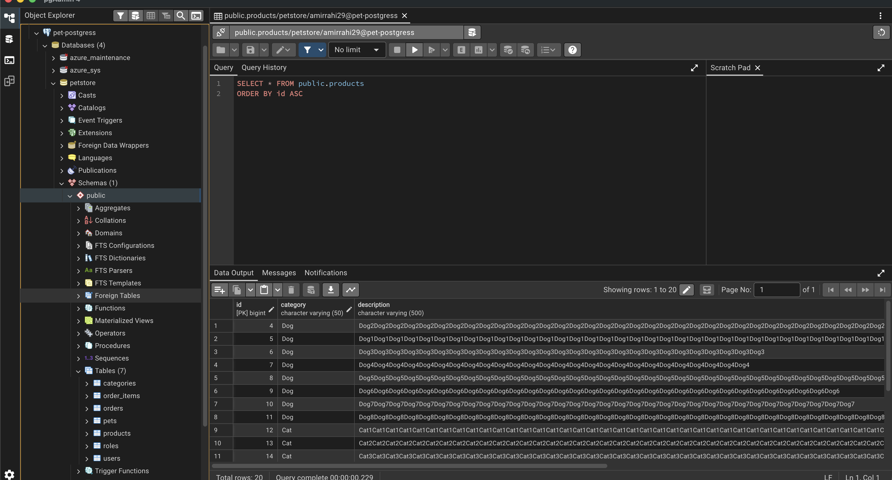
Figure 40. pgAdmin, database petstore on pet-postgres. SELECT * FROM public.products ORDER BY id ASC returns 20 rows, ids 4 through 13 on the first page, categories Dog and Cat.
18. App Service scale-out
Plan ASP-PetstoreResourceGroup-9881 can add instances from the Scale out blade. The selected scale-out method is Rules Based, so the instance count follows user-defined rules on a schedule or a metric. Manual would hold a constant count. Automatic scale-out is not available on this plan.
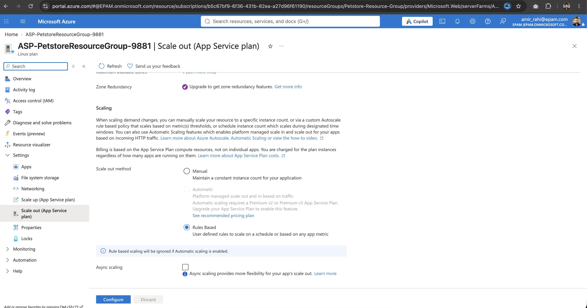
Figure 41. Scale out for ASP-PetstoreResourceGroup-9881. Rules Based is selected. The note on the blade says rule-based scaling is ignored if Automatic scaling is enabled.
19. Azure Function HTTP trigger
Function App petstore-function in petstore-resource-group hosts the HTTP trigger petstore-http. The function is packaged as petstore-http-1.0-SNAPSHOT.jar, entry point com.petstore.Function.run. function.json binds an anonymous HTTP trigger named req that accepts GET and POST. Code + Test runs the function in the portal and returns the response beside the log.
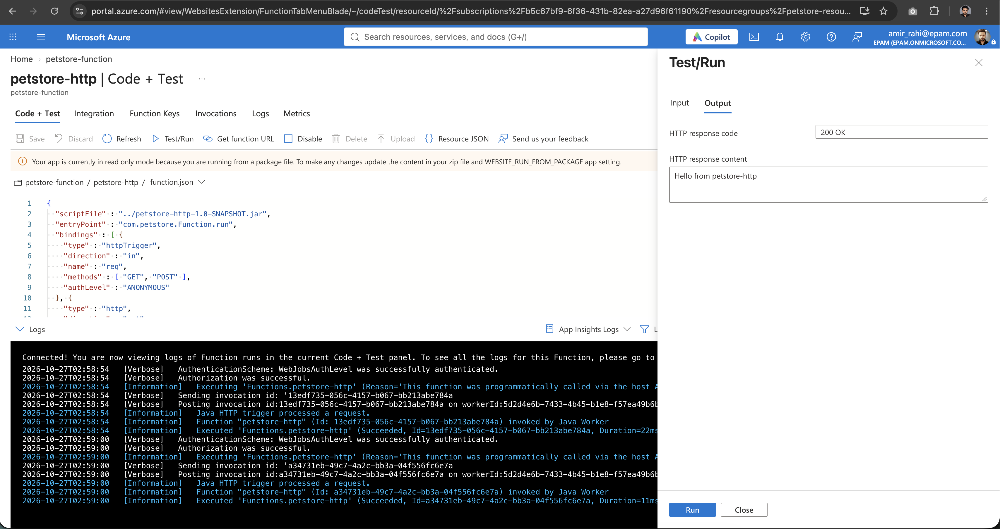
Figure 42. Code + Test for petstore-http. The Test/Run output is HTTP 200 with the body Hello from petstore-http. The log shows the host authenticated, the Java worker invoked the function, and the execution succeeded.
20. Microsoft Entra External ID
Customer sign-in uses a dedicated Microsoft Entra External ID tenant, separate from the workforce directory that owns the Petstore subscription. The paid store is registered there as petstore-customer-app. Customers authenticate with the signupsignin user flow. The Spring Boot application on the developer machine exchanges the authorization code, and the React demo published to App Service calls that local application through a public HTTPS tunnel. Secret values are not printed.
petstore-customer-app, client ID d61edc16-5f84-4246-8bb1-2353a3ec516d
User flow, identity provider, attributes
signupsignin with email and password local accounts
Optional claims
email, given_name, and family_name, requested with scopes openid profile email
OAuth 2.0 / OpenID Connect in Spring Boot
Authorization code with PKCE, token exchange, and a server session
Local authentication test
Completed against the local Spring Boot process before the cloud test
Azure deployment with External ID
React demo on intra-web-application, Java backend kept local
Production redirect URI
Three web redirect URIs, including the App Service origin and the tunnel origin
Dedicated tenant for customer identities
The customer directory is petstore-tenant. Its tenant ID is 9f8d97a4-9691-45df-8fb9-8c215ff7b7be and its primary domain is petstorecustomers.onmicrosoft.com. The license shown on the overview is Microsoft Entra ID Free. Sign-in for this directory is served from ciamlogin.com, which is the External ID endpoint, rather than from the workforce login host. The tenant overview records 2 users and 2 applications.
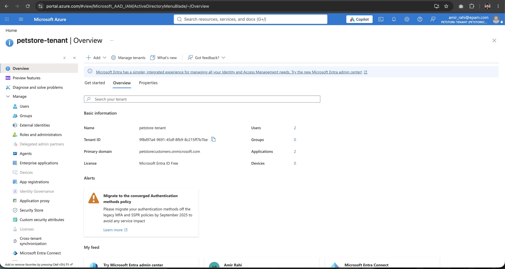
Figure 43. Overview of petstore-tenant. Name, tenant ID, primary domain petstorecustomers.onmicrosoft.com, 2 users, and 2 applications.
The two directory users are both members. amirrahi29@petstorecustomers.onmicrosoft.com is the local customer account used in the sign-in test. amir_rahi_epam.com#EXT#@petstorecustomers.onmicrosoft.com is the external administrator invited from the workforce account. Customer identities therefore live in this tenant, and the workforce user is only an external member for administration.
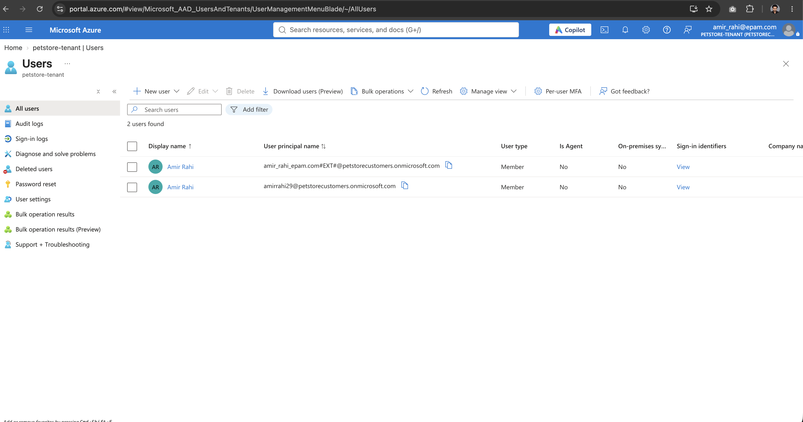
Figure 44. Users in petstore-tenant. Two members: the external administrator and amirrahi29@petstorecustomers.onmicrosoft.com.
Paid store application registration
The store application in this tenant is petstore-customer-app. It was created on 27 October 2026. The application (client) ID is d61edc16-5f84-4246-8bb1-2353a3ec516d and the object ID is 77cf9188-81c6-42fb-98a4-1564e07a24ca. Supported account type is this organization only. The second registration, b2c-extensions-app, is the platform application Entra creates for user-attribute storage and is left unchanged.
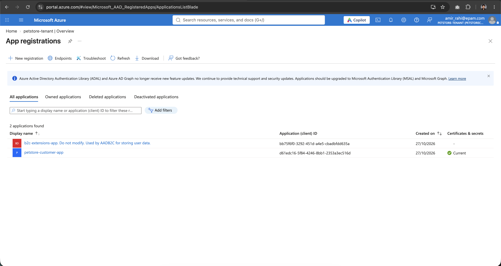
Figure 45. App registrations in petstore-tenant. petstore-customer-app is listed with its client ID, created on 27 October 2026, and certificates and secrets marked Current.
The application overview shows the registration is Activated. Client credentials are 0 certificates and 2 secrets. A secret is required because this is a web application: the Spring Boot token request sends that secret with the authorization code. Redirect URIs are 3 web, 0 single-page, and 0 public client. Those three web URIs are the local callback http://localhost:8083/login/oauth2/code/azure, the deployed site origin https://intra-web-application-agb3cearbmcef5ej.westus3-01.azurewebsites.net/, and the tunnel origin https://captured-feature-hearing-scholar.trycloudflare.com with no trailing slash.
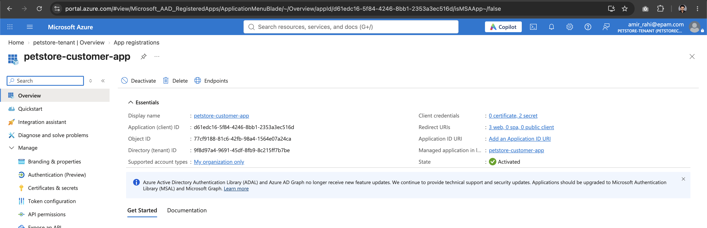
Figure 46. Overview of petstore-customer-app. Client ID, directory tenant ID, state Activated, 2 secrets, and 3 web redirect URIs.
User flow, identity provider, and attributes
The customer journey is the signupsignin user flow. The authorize request selects it with p=signupsignin and sends prompt=login, so Entra asks for credentials instead of silently reusing a session. The identity provider for this flow is the local email-and-password account in the External ID tenant. The first page collects the email address. The second page collects the password for that account. Email is both the sign-in identifier and a collected attribute. Given name, surname, and display name are the profile attributes associated with the same user flow.
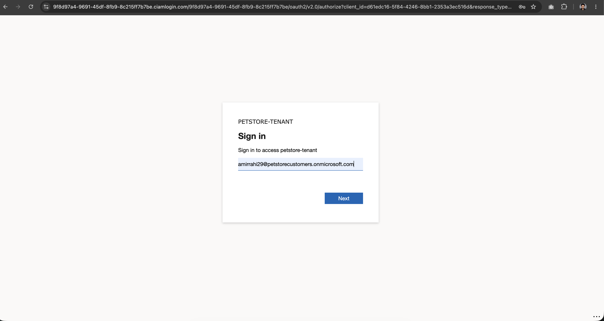
Figure 47. External ID sign-in hosted at ciamlogin.com for PETSTORE-TENANT. The customer email amirrahi29@petstorecustomers.onmicrosoft.com is entered. The address bar is the v2.0 authorize endpoint for client d61edc16-5f84-4246-8bb1-2353a3ec516d.
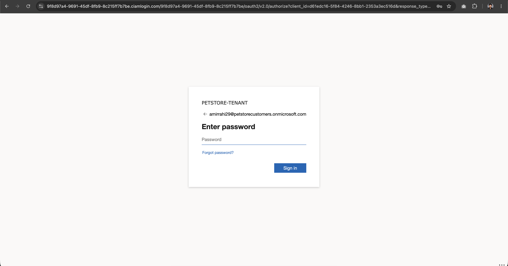
Figure 48. Password step for the same account. Entra accepted the email and is collecting the local-account password. Forgot password is offered by the user flow.
Optional claims
The customer application is configured so the ID token can carry email, given_name, and family_name. The sign-in request asks for those claims by sending the scopes openid, profile, and email. That scope list is part of the authorize URL in Figure 47 and Figure 48. The Spring Boot callback reads the ID token after the code exchange and keeps the browser session only when the token is present. The portal Token configuration blade is not one of these screenshots. The app registration menu in Figure 46 includes Token configuration, and the authorize request shows the scopes that pull the optional profile claims.
OAuth 2.0 and OpenID Connect in Spring Boot
The Intra ID backend is a Java 17 Gradle Spring Boot application, com.intra.id, running locally with bootRun on port 8080. It is the confidential client for petstore-customer-app. GET /login/entra starts the authorization-code flow with a PKCE S256 challenge and redirects the browser to the tenant authorize endpoint. Entra returns the code to the tunnel origin, which is the registered redirect URI. The application posts that code, the PKCE verifier, the client ID, and the client secret to the v2.0 token endpoint. The secret is read from local configuration and is not stored in the repository. On a successful ID token the server marks the HTTP session signed in and sends the browser back to the frontend. GET /api/entra/items returns the demo rows Collar 12, Leash 8, and Bowl 5 only for that session. POST /logout invalidates the session. The session cookie is SameSite=None and Secure, and cross-origin calls from the App Service hostname are allowed with credentials, so the deployed page can use the local session.
Local authentication test
The same flow was exercised locally before the cloud test. The React dev server on port 3000 sent the browser to the Spring Boot sign-in endpoint, Entra completed the user flow, and the demo list was returned to the local page. Logout returned the browser to the sign-in form because prompt=login forces a fresh credential prompt. Those local pages are not in this screenshot set. Figures 47 through 50 are the later run from the deployed site, which uses the same application registration, the same user flow, and the same token exchange.
Deployment to Azure with External ID
The customer demo frontend is the React application in Intra-ID/intra-frontend. GitHub Actions workflow intra-frontend.yml on main of amirrahi29/Petstore-Microservice-App-SpringBoot-React builds that application and deploys it to App Service intra-web-application in petstore-resource-group, West US 3, plan ASP-petstoreresourcegroup-86dc. Publishing for that app is Code. The app was also set to the Java 17 stack while the Spring Boot package was being prepared. The package that is live is the React frontend: the site serves the Pet Store page, and the Java Intra ID process was not deployed. It stays on the developer machine at port 8080. A later frontend publish pointed the page at the public tunnel so sign-in and the items API leave the App Service host and reach that local process.
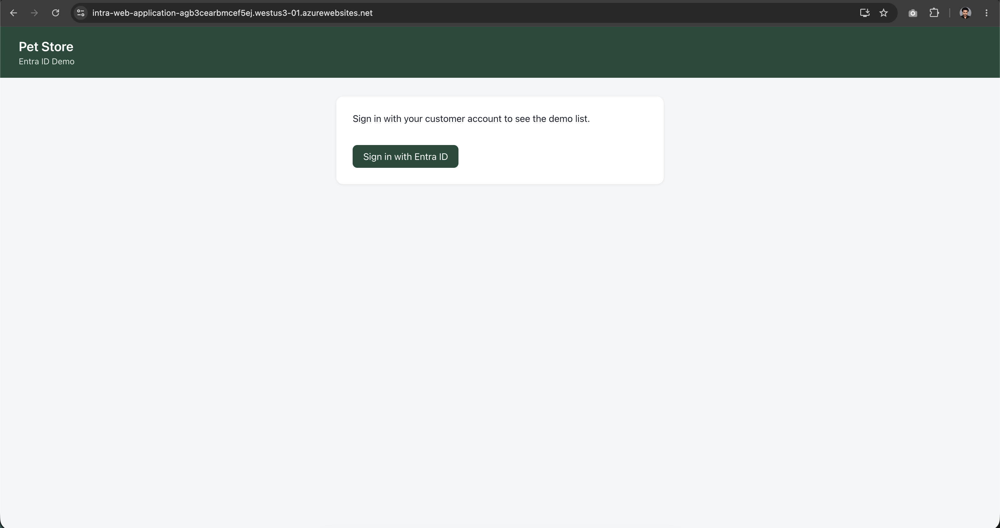
Figure 49.https://intra-web-application-agb3cearbmcef5ej.westus3-01.azurewebsites.net before sign-in. The page is the deployed React demo, with the header Pet Store / Entra ID Demo and the button Sign in with Entra ID.
Production redirect URI
Entra accepts a redirect only when it matches a URI on the application. Figure 46 records three web redirect URIs. The local development callback remains http://localhost:8083/login/oauth2/code/azure. The deployed site origin https://intra-web-application-agb3cearbmcef5ej.westus3-01.azurewebsites.net/ is registered for the cloud frontend. The local Java process is not reachable from that site on localhost, so a public HTTPS tunnel fronts port 8080. An ngrok tunnel at https://discount-tipped-hurray.ngrok-free.dev answered with the free-plan browser warning page, which would replace the OAuth redirect. The working tunnel is https://captured-feature-hearing-scholar.trycloudflare.com, registered with https:// and no trailing slash, and that exact origin is the redirect_uri sent by the Spring Boot application. After the password in Figure 48 is accepted, Entra returns the browser to that URI, the local application creates the session, and the browser lands on the App Service site already signed in.
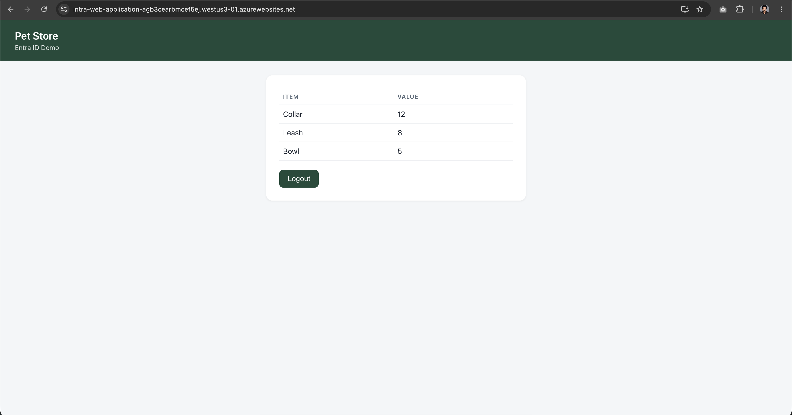
Figure 50. The same App Service hostname after the External ID sign-in. The session is authenticated: the demo list shows Collar 12, Leash 8, and Bowl 5, and Logout is available. The sign-in button is gone.